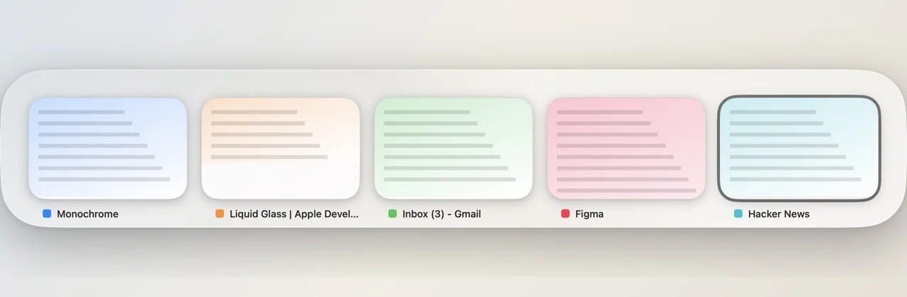
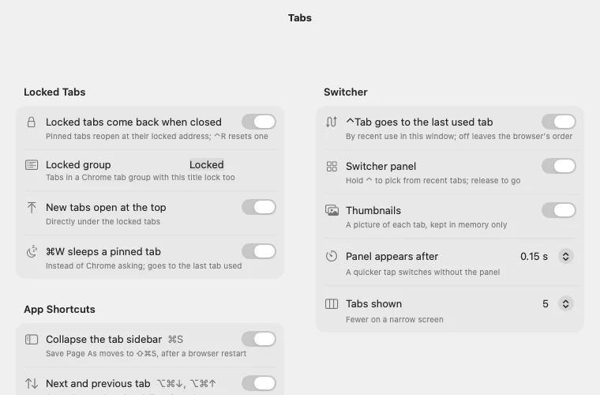
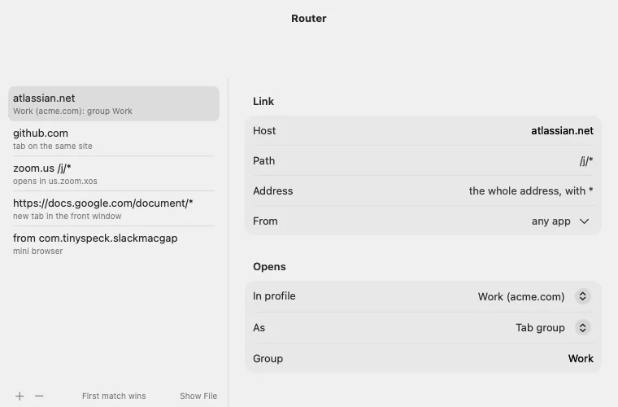
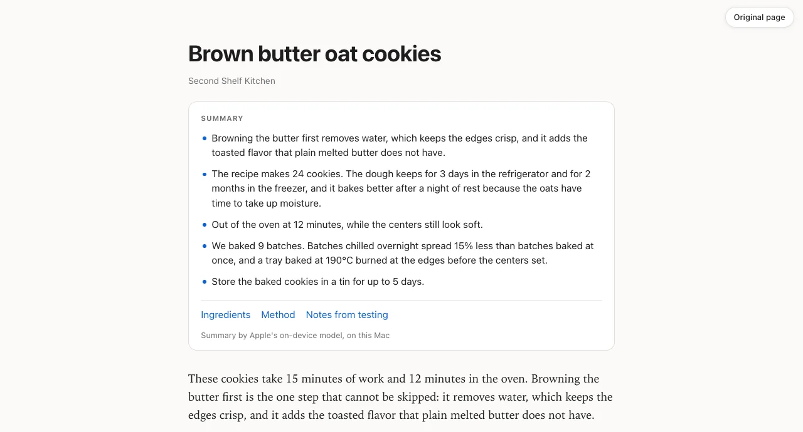
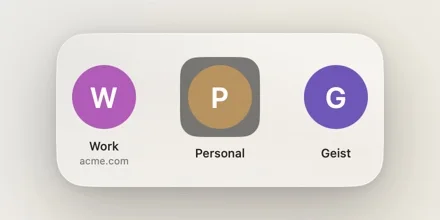

A Mac app and a Chrome or Safari extension
Arc's tabs in Chrome or Safari.
Close a pinned tab and it comes back. Hold ⌃Tab to step through the tabs you just used. A link from Slack opens in a small window instead of the middle of your work. All of it inside Chrome’s or Safari's own window, which Monochrome adds nothing to.
Download for Mac What it needs →
Free and open source. macOS 13 or later, with Google Chrome or Safari.

⌃Tab
Back to the tab you were just in.
The first ⌃Tab goes to the tab you used last in this window. Hold ⌃ and the switcher above shows the five most recent as thumbnails, newest first. Let go to pick one; Esc stays put. Pressed twice, it brings you back where you started.
The thumbnails are taken when you visit a tab, and kept in memory only.
Locked tabs
Close it. It comes back.
Pin a tab, or put it in a tab group named Locked, and it remembers the address it had. Close it and it reopens in place, at that address. Wander off and ⌃R takes it back. Unpin it, or drag it out of the group, to close it for good.
New tabs open directly under the locked ones, ⌘T included, so the tab you just made is always at the top.
In Safari, only pinned tabs come back. The Locked group and the other features need Chrome.

Mini browsers and link rules
Links from other apps get a window of their own.
Monochrome is your default browser, so a link from Slack, Mail or a terminal opens in a mini browser: a small Chrome window with no tab strip. ⌘O moves the page into Chrome when it’s worth keeping. One left alone for 12 hours closes itself.
Rules send some links elsewhere: atlassian.net links to a group in the Work profile, Zoom straight to Zoom, GitHub to a tab already open on it. The first rule that matches wins.

Command bar
Two letters, and the site you meant.
Turn the command bar on and ⌘L and ⌘T open it over the window in place of Chrome’s address bar. It finishes the address you type most, then lists your open tabs, history, bookmarks and Google’s suggestions.
It starts switched off. Each key has its own switch in Settings.
Reader
The summary first, then the page.
⌥⇧R shows the page in front as an article, without its ads, navigation and comments, and puts a summary on top. On macOS 26 and later, Apple’s on-device model writes it, and each point links to the paragraph that says it. Without the model, the card is an outline of the page.
Nothing runs on a page until you ask. Esc puts the page back.

The rest
A few more keys.
- Sleep ⌘W on a pinned tab puts it to sleep instead of asking whether to close it.
- Peek A link from a locked tab opens over the window. Click outside it and it’s gone.
- Profiles ⌃⌥1 to 9 picks a Chrome profile by its place in the menu.
- Mini player What’s playing on Spotify, YouTube Music and seven other sites, at the foot of the tab sidebar.
- Sidebar ⌘S hides Chrome’s vertical tabs. Save Page As moves to ⇧⌘S.

Privacy
Your tabs stay on your Mac.
Monochrome sees every tab you open. Here is what it does with them.
-
No servers
We run none: no accounts, no analytics, no crash reports. The extension talks only to the app on the same Mac, over Chrome’s native messaging.
-
Pictures in memory
The switcher’s thumbnails stay in the app’s memory and are gone when the tab closes or Chrome restarts. Summaries are never written to disk.
-
What does leave
What you type in the command bar goes to Google for suggestions, as Chrome’s address bar does; one switch stops it. Once a day the app checks GitHub for an update.
-
Pages only when asked
The reader reads a page’s text only when you open it on that page, and Apple’s model summarises it on the Mac.
Download
Free, for any Mac with Chrome or Safari.
- macOS 13 or later.
- Google Chrome, Beta, Dev, Canary or Chromium; or Safari 17 or later.
- Free, and open source under the MIT licence.
- Signed with Artifact’s Developer ID and notarized by Apple, so it opens like any downloaded app.
- Move Monochrome to Applications and open it. It connects itself to Chrome or Safari, starts at login, puts its own tile in the Dock in place of Chrome’s, and asks macOS to make it your default browser.
- Allow Accessibility when it asks. ⌃Tab, ⌥⌘-click and the profile keys need it.
- Quit Chrome or Safari and open it from the Monochrome tile. Started that way, the browser gets the flags Monochrome needs.
- Load the extension. Settings → Browser → Install Extension… shows the folder to drag onto
chrome://extensions(Chrome) or Safari → Settings → Extensions (Safari), with Developer mode on. - Show tabs vertically: right-click Chrome’s tab bar or Safari's Show Tab Overview. Pin the tabs you want locked.
It updates itself, checking once a day. Settings → General turns that off.
uninstall.sh in the source removes the app and everything it set up.